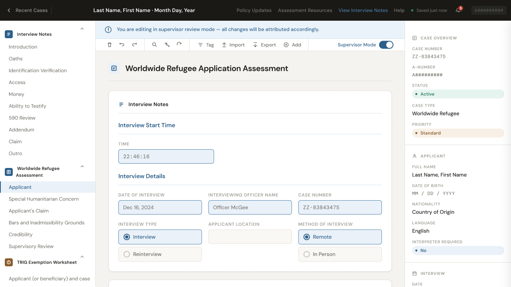
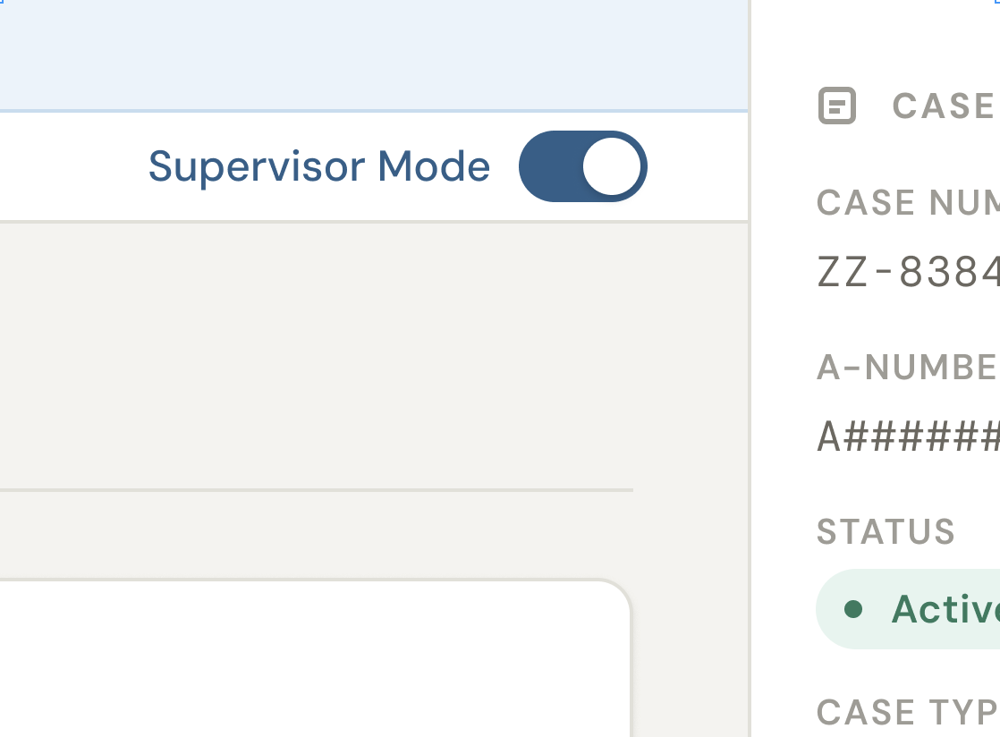
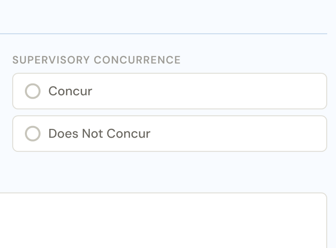
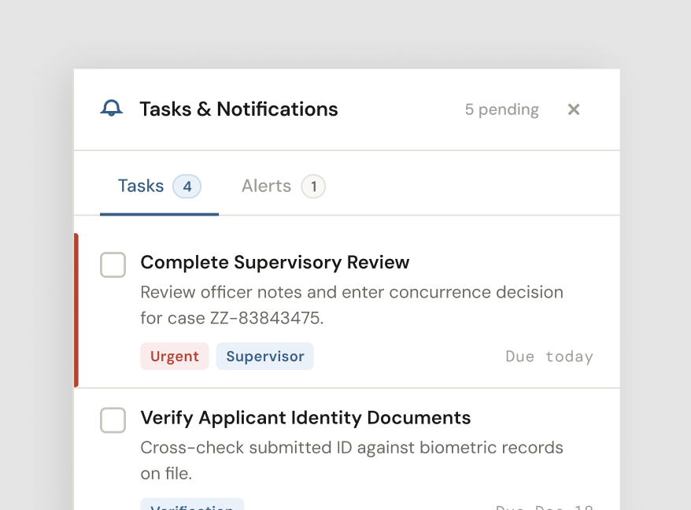

Replacing a fragmented offline process with a streamlined, cloud-based review environment — so supervisors could focus on the cases, not the paperwork.

The review process required supervisors to download interview recordings, open forms in Acrobat, annotate and edit locally, then manually track every document across an offline filing system. Every review was a context-switch away from the app where their work actually lived.
Beyond the inefficiency, the cognitive overhead was real. Missed steps, version confusion, and lost files were risks in a domain where accuracy genuinely matters — these are asylum and refugee cases, not expense reports.
The opportunity was clear: bring the entire review workflow into the application and give supervisors the tools they needed without disrupting how officers worked around them.



The adoption numbers were strong, but they weren't a surprise — they were the result of involving real supervisors at every stage, from the first research sessions through the rollout itself. When users have shaped a product, they show up for it.
The critical quote — "still not perfect, still tasks elsewhere" — was the most useful thing to come out of the launch. It's now the starting point for the next phase of the feature. Good feedback doesn't mean everyone is happy. It means you understand exactly what's left to do.
If I were to run this project again, I'd push harder for a larger usability testing cohort. Four users caught real issues, but there were edge cases in supervisor workflows that only surfaced post-launch. More pre-launch exposure to the full range of users would have closed that gap.